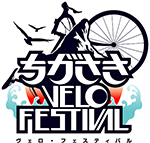

au損害保険株式会社
2012年11月8日

＜au損保 特別協賛イベント＞ 11月23日（金）開催 『ちがさきVELO FESTIVAL』 のお知らせ
VELO（仏語）＝自転車
弊社は、2012年11月23日（金）「自転車のまち」茅ヶ崎市で開催される『ちがさきVELO FESTIVAL』に特別協賛いたします。
本イベントは、茅ヶ崎市が「自転車のまち」として自転車の利用促進および安全啓発活動を目的に大々的に展開する都市型総合イベントです。
弊社も本イベント趣旨に賛同し特別協賛するとともに、当日は特設ブース、ステージイベントなどでau損保が推進する「スマートサイクリングプロジェクト」および各種取組みをご紹介いたします。
多くの皆さまのご来場をお待ちしております。
以上
[イベント概要]
- ■名 称：
- ちがさきVELO FESTIVAL（ヴェロ・フェスティバル）
- ■開催日：
- 2012年11月23日（金・祝日）※悪天候時は24日（土）に順延
- ■会 場：
- 茅ヶ崎中央公園（神奈川県茅ヶ崎市茅ヶ崎2-3-1）
JR茅ヶ崎駅北口徒歩5分
- ■主 催：
- ちがさきVELO FESTIVAL実行委員会
- ■共 催：
- 茅ヶ崎市
＜リンク先＞
- ◇ちがさきVELO FESTIVAL
- http://www.velo-festival.com/
- ◇スマートサイクリングプロジェクト
- http://www.smart-cycling.jp/